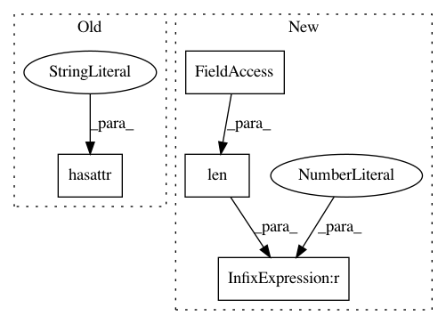

5dba182362d6d3b7d87fe852a4d707bd7ec3153a,main.py,,main,#,43
Before Change
next_value = actor_critic(Variable(rollouts.observations[-1], volatile=True))[0].data
if hasattr(actor_critic, "obs_filter"):
actor_critic.obs_filter.update(rollouts.observations[:-1].view(-1, *obs_shape))
rollouts.compute_returns(next_value, args.use_gae, args.gamma, args.tau)
After Change
for i in range(args.num_processes)
])
if len(envs.observation_space.shape) == 1:
envs = VecNormalize(envs)
obs_shape = envs.observation_space.shape
obs_shape = (obs_shape[0] * args.num_stack, *obs_shape[1:])
In pattern: SUPERPATTERN
Frequency: 3
Non-data size: 4
Instances
Project Name: ikostrikov/pytorch-a2c-ppo-acktr
Commit Name: 5dba182362d6d3b7d87fe852a4d707bd7ec3153a
Time: 2017-11-17
Author: ikostrikov@gmail.com
File Name: main.py
Class Name:
Method Name: main
Project Name: uhfband/keras2caffe
Commit Name: 35d25997655036ead131495a316e37905ef1ac63
Time: 2019-05-18
Author: uhfband@gmail.com
File Name: keras2caffe/convert.py
Class Name:
Method Name: convert
Project Name: pfnet/optuna
Commit Name: 9b887e4a3a53577798257c66ff47efcac6a5358d
Time: 2019-11-05
Author: masaki.kozuki.2014@gmail.com
File Name: optuna/visualization.py
Class Name:
Method Name: _get_intermediate_plot